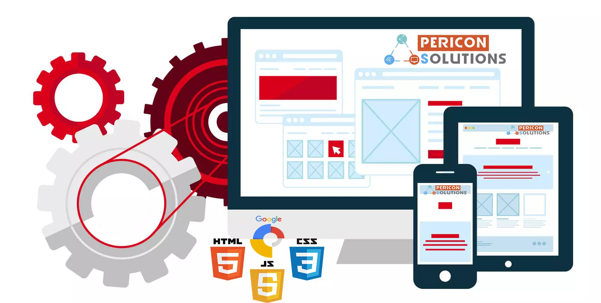

Top Lenguajes de Programación
En este espacio quiero contarte un poco más sobre
lenguajes de programación inicialmente enfocandonos en los que se
utilizan con más relevancia al momento de crear, diseñar y darle vida a
una pagina o sitio web.
Muchas veces un cliente por alguna razón tiene cierto conocimiento sobre el lenguaje que desean que usemos para el desarrollo web o desarrollo app en su proyecto. Por eso es importante tener el conocimiento y la experiencia en cada uno de ellos, esto con el fin de crecer profesionalmente o no perder oportunidades de empezar a trazar una linea laborar y darte a conocer.
PHP
El clásico PHP es un lenguaje muy extendido y fácil de aprender, y además, hay muchos desarrolladores que saben usar el lenguaje y lo usan para desarrollar páginas web u otros subsistemas de información.
Es un lenguaje interpretado, que se entremezcla en su forma más natural, con el código HTML y JAVASCRIPT en las páginas. Eso dificulta a veces la separación del código y aislar las funcionalidades, pero para proyectos pequeños o medios, es una buena solución.
ANGULAR
Potenciado por Google, es un lenguaje de desarrollo muy versátil y que permite la creación de componentes de forma ágil. Es un potente framework que permite fácilmente desarrollar soluciones complejas y de forma muy eficiente.
REACT JS
Similar concepto que Angular, también es un framework muy potente, quizás un paso atrás en este caso, pero una alternativa a tener muy en cuenta. Desarrollado y potenciado por facebook, también tiene sus defensores y sus detractores.
JQUERY
Potente y simple. Esta es la definición más clara de jQuery, un framework de javascript que permite multitud de funcionalidades a ejecutar en el navegador del usuario. Sus ya años de desarrollo hacen que sea un estándar que muchas webs incorporen de un modo u otro su potencia.
WORDPRESS
Si bien no es un lenguaje de programación como el resto, si queremos ponerlo en la lista. Puesto que se trata de un entorno de desarrollo CMS. Muchísimas webs, sobretodo las de tipo presencial sin grandes pretensiones, han hecho uso para su implementación. Basado en PHP y mySql, es una solución fácil y más económica que un proyecto a medida. Además, usando plantillas o plugins, rápidamente tenemos muchas funcionalidades y diversas para nuestro proyecto de desarrollo web.
TRES HERRAMIENTAS ESENCIALES PARA DESARROLLAR UNA PAGINA WEB
 |  |  |
| HTML, siglas en inglés de HyperText Markup Language, hace referencia al lenguaje de marcado para la elaboración de páginas web |
CSS, en español «Hojas de estilo en cascada», es un lenguaje de diseño gráfico para definir y crear la presentación de un documento estructurado escrito en un lenguaje de marcado. |
JavaScript es un lenguaje de programación interpretado, dialecto del estándar ECMAScript. Se define como orientado a objetos, basado en prototipos, imperativo, débilmente tipado y dinámico. |
Herramientas para Desarrollo
Java
JavaScript
Html
Css
MySql
.Net core
Jquery
PHP
Ruby
Cshard
Angular
Python
NodeJs
Vue
React
El mundo del desarrollp web o desarrollo de aplicaciones nos ofrecen un amplio numero de herramientas que nos permiten la creación desde cero como la modificación de las mismas. Estas herramientas las podemos aprender dependiento delproyecto que se este trabajando, lo que desee el jefe del proyecto o la capacidad de nuestro aprendizaje. Herramientas tanto del lado del servidor como del cliente son todo lo que necesitamos para desempeñarlos dentro de este mundo pero hay que tener en claro las buenas practicas tanto para desarrolladores, programador o como deseen llamarlo.
Bitacora